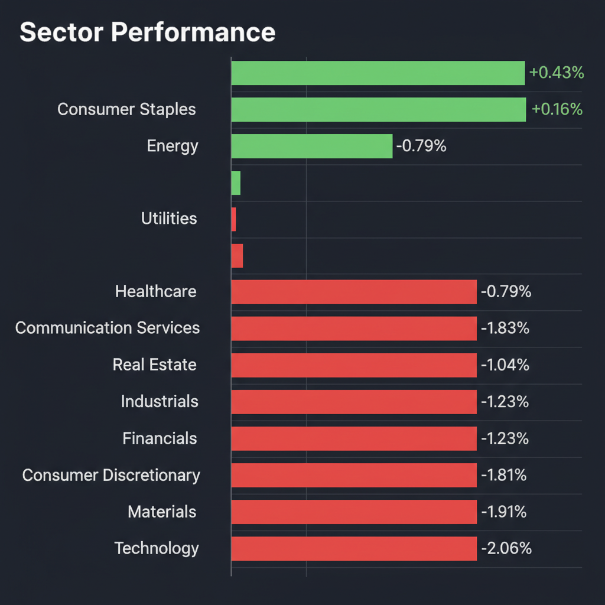
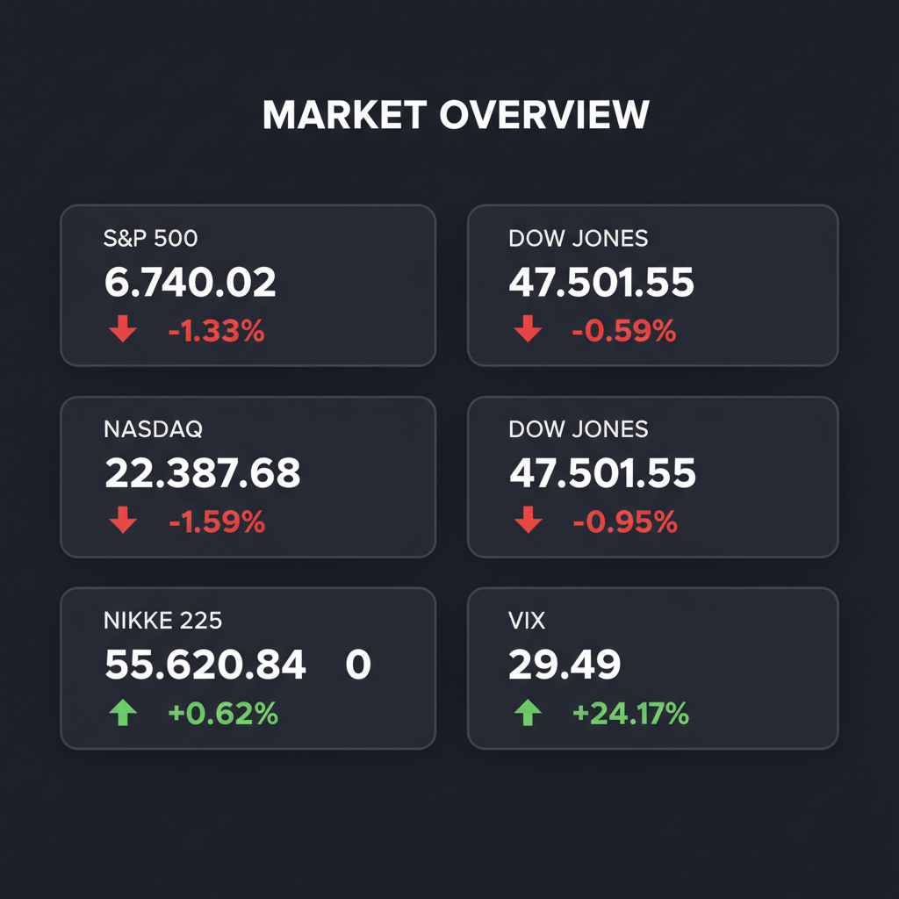

Daily Investment Report - 2026-03-07
Generated: 2026/3/7 8:12:56


投資チームミーティングの議長として、各エージェントの多角的な分析を統合し、現在の市場環境において投資家が即座にアクションを取るための最終投資レポートを作成いたしました。
1. エグゼクティブサマリー
* VIX指数の急騰（29.49）と米国ハイテク株の下落が示す通り、市場は「AIへの熱狂」から「景気後退を警戒するリスクオフ」へと急旋回しています。
* 高金利の長期化とインフレの粘着性により、大型メガテックのバリュエーション収縮リスクが極めて高まっているため、直ちにディフェンシブな姿勢への移行が必要です。
* 投資の主戦場は、すでに割高な大型株から、「AI電力インフラの恩恵を受ける割安な中小型株」や「強力なキャッシュフローを持つディフェンシブ・エネルギーセクター」へと移すべき局面です。
2. 注目銘柄リスト
市場の注目が大型株に集まる中、高い成長ポテンシャルと安全マージンを併せ持つ中小型株、および警戒すべき銘柄を以下に分類します。
強気（買い推奨）
*
Atkore Inc. (ATKR) [約$5B]: 電線管やケーブルマネジメントの北米トップメーカーであり、AIデータセンター建設の恩恵を直接受けながらPER10倍台・営業利益率20%超と圧倒的に割安です。
*
マクニカホールディングス (3132) [約2,500億〜3,000億円]: AI半導体需要を強力に取り込む有力代理店でありながら、PER約8倍、配当利回り3%超と下値不安が極めて限定的です。
*
QPS研究所 (5595) [数百億円規模]: 防衛省からの大型受注を抱える小型SAR衛星メーカーであり、参入障壁が絶望的に高く、政府の強力なバックアップによる巨大な成長アップサイドが見込めます。
*
Rocket Lab USA (RKLB) [約$2B〜$3B]: SpaceXに次ぐ商業小型ロケット企業であり、米中のデリスキング（宇宙・防衛インフラ独自の構築）需要を独占し得る爆発的なポテンシャルを秘めています。
中立（様子見）
*
Fluence Energy (FLNC) [約$3B]: AIデータセンターの電力不足を解決する次世代蓄電池システムのリーダーで売上成長は強力ですが、フリーキャッシュフローの継続的なプラス転換を確認するまでは待機が妥当です。
弱気（警戒）
*
日本のバリュートラップ銘柄（一部の地方銀行やオールド小売株） [数十億〜数百億円]: PBR1倍割れや高配当という理由だけで買われていますが、売上成長や営業キャッシュフローがマイナスであり、純資産を食いつぶすだけの投資リスクが極めて高い状態です。
*
利益の裏付けがない超小型AI関連株 [数億〜数十億円]: AIというテーマ性だけで買われ、PSR（株価売上高倍率）が異常に高い赤字企業は、VIX急騰に伴う信用収縮局面で最初に流動性が枯渇し暴落する危険性があります。
3. セクター推奨ランキング
1.
エネルギー・公益事業（オーバーウェイト）: AIデータセンターによる爆発的な電力需要増（原子力・次世代送電）の恩恵を受けつつ、中東情勢による原油高のインフレヘッジとしても機能する最強のテーマです。
2.
ヘルスケア（オーバーウェイト）: VIX急騰のパニック相場でも底堅く、GLP-1（肥満症治療薬）やADC（抗体薬物複合体）といった強力な構造的成長エンジンを持つ防衛セクターです。
3.
生活必需品（やや強気）: 高金利とインフレによる「消費者の疲弊・節約志向」が顕著になる中、リスクオフ局面において確実な資金の逃避先となります。
4.
日本の金融・バリュー株（中立〜やや強気）: 日銀の利上げによる利ざや改善と東証のPBR是正による自社株買いの恩恵を受けますが、為替（円高への揺り戻し）の逆回転リスクには注意が必要です。
5.
テクノロジー・一般消費財（アンダーウェイト）: 高金利の長期化によりバリュエーション（PER）の収縮リスクが最も高く、消費の落ち込みが直撃するため当面は新規買いを回避すべきです。
4. 今週の注目イベント
* 米国消費者物価指数（CPI）および生産者物価指数（PPI）の発表（インフレ粘着性とFRB利下げ見通しの再評価）
* 米国雇用統計の発表（労働市場の逼迫緩和度とスタグフレーション・リスクの検証）
* 日銀要人による金融政策に関する発言・講演（追加利上げのペースと円高逆回転リスクの観測）
* 中小型ハイテクおよび小売企業の四半期決算発表（AIのマネタイズ進捗と、消費者疲弊の二極化の確認）
5. リスク要因
*
スタグフレーション・リスク: インフレが高止まりする一方で雇用や消費が急減速した場合、FRBが利下げに踏み切れず、株式市場のバリュエーションが強烈に切り下がる最悪のシナリオです。
*
日銀のタカ派サプライズと円キャリートレードの巻き戻し: 日銀の想定以上の早期追加利上げと米国の景気後退が重なった場合、急激な円高が進行し、日本株の大幅調整とグローバルな流動性危機を招く恐れがあります。
*
システマティック・ファンドの連鎖的パニック売り: VIX指数が30を超えて定着した場合、機械的な売りプログラムが発動し、これまで機能していたサポートラインが次々とブレイクダウンする危険性があります。
*
AI投資のROI（費用対効果）への疑念: ハイパースケーラーの巨大な設備投資に対する利益回収の遅れが意識された瞬間、半導体・AIエコシステム全体にバリュエーション崩壊（マルチプル・コンプレッション）が波及します。
6. アクションアイテム
*
ポジションサイズの縮小とキャッシュの確保: 現在の株式エクスポージャーを直ちに20〜30%削減し、流動性の高い短期米国債やMMF（マネー・マニフェスト・ファンド）へ資金を退避させてください。
*
厳格なストップロスの設定: 新規エントリーは控え、既存の保有銘柄については直近のサポートライン（50日移動平均線など）の少し下に機械的な損切り（逆指値）注文を設定し、ダウンサイドリスクを遮断してください。
*
ポートフォリオのディフェンシブ・ローテーション: 高PERの大型ハイテク株の利益を確定させ、その資金を堅実な営業キャッシュフローを持つ資本財の中小型株、またはエネルギー・生活必需品セクターへ振り向けてください。
*
テールリスクへのヘッジ構築: VIXのさらなる上昇に備え、S&P500や日経平均のプットオプションを購入するか、ポートフォリオの5〜10%を金（ゴールド）にアロケーションし、ブラックスワン・イベントへの防波堤を築いてください。